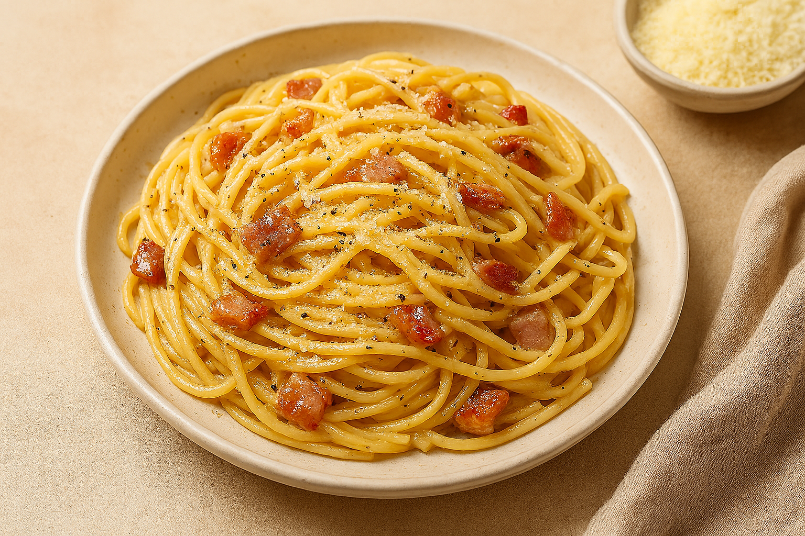

Spaghetti Carbonara

Back to home
Description
Spaghetti Carbonara is a creamy, savory Roman classic made with eggs, cheese, pancetta, and pepper. It’s deceptively simple yet rich in flavor, relying on technique rather than heavy ingredients.
The sauce is created by emulsifying egg yolks and cheese with hot pasta, forming a silky coating without cream.
Ingredients
- 400g spaghetti
- 150g pancetta or guanciale
- 2 large eggs
- 1/2 cup grated Pecorino Romano
- Freshly ground black pepper
- Salt to taste
Steps
- Cook spaghetti in salted water until al dente. Reserve 1/2 cup pasta water.
- In a pan, sauté pancetta until crispy. Remove from heat.
- Beat eggs with cheese and pepper in a bowl.
- Add hot pasta to pancetta, then stir in egg mixture quickly to avoid scrambling.
- Add reserved pasta water gradually to loosen the sauce.
- Serve immediately with extra cheese and pepper.